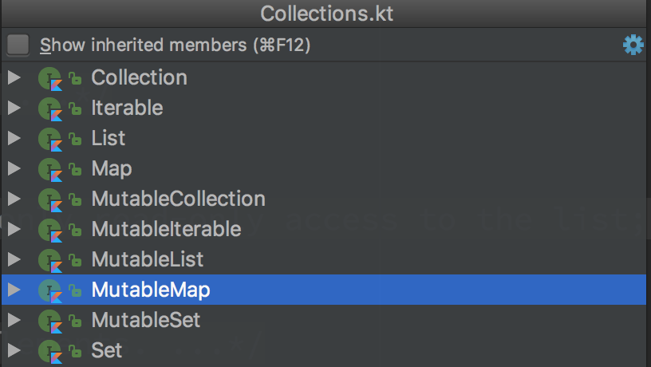

Kotlin的Map相对于Java的Map在设计上有更好的”不变性”，在使用上也更加方便。
Java Map介绍
谈Kotlin的Map前，首先看看Java的Map。先看看Map是什么。
可以将Map理解成一个广义上的数组。普通数组的索引只能是数字，0、1、2，普通数组在物理上是连续的。而Map的索引可以是任何具有不变性的对象，比如可以是字符a、b、c。
在Java中Map具体指java.util.Map。java.util.Map是接口，实际中最常用的类是java.util.HashMap。
1 | Map<Integer, String> m = new HashMap<Integer, String>(); |
java.util.HashMap常被用来作为最简单的内存缓存。一个典型的场景是先检查缓存中是否有结果，没有的话重新计算并更新缓存。
1 | Object value = cache.get(key); |
然而学习Kotlin时发现似乎官方更推荐使用mapOf()或mutableMapOf()，而不是直接使用HashMap()。原因有两点
一方面是mapOf()和mutableMapOf()写起来更简单。下面这个例子用HashMap写的话，显然繁琐很多。
1 | val m = mapOf(1 to "a", 2 to "b") |
更重要的是，Kotlin的Map在设计上考虑得更全面。
Java Map的问题
我们知道，编程中准确地控制HashMap是否可以只读，可以减少意外写操作的风险。这通常意味着代码中更少的bug。
比如，一个HashMap是只读的(也可以说是不可写的、不能修改的)，假如你意外地修改了它的值，代码编译期就会报错，而不是等到运行期间出现某些难以跟踪的bug，世界是不是更美好。(可能你会说，谁会蠢到不小心去修改Map中的值。可是，哪个bug归根结底不是愚蠢的)
很可惜这种看似理解当然的结果，在Java世界却并非如此。Java的确在java.util.Collections工具类中提供了大量的unmodifiableXXX()方法用于生成不可修改的集合，其中包括unmodifiableMap()，以解决只读Map的问题。可惜这些小的修补并不完美
请看这段代码。它在运行时抛出异常，java.lang.UnsupportedOperationException at java.util.Collections$UnmodifiableMap.put(Collections.java:1457)
1 | public void unsupportedOperationException() { |
- 你能容易地判断modifiableMap和unmodifiableMap是否只读的吗？ 不能
- 你能容易地判断foo()的map参数是否只读的吗？ 不能
- unmodifiableMap.put(1, “a”)在编译期会报错吗？不会
三个问题都是因为Java中的Map接口在设计上并没有考虑变(可写)与不变(只读)的问题。结果，你无法用Java的Map设计清晰、明确的API，你只能等到运行时眼睁睁地看Java的Map抛出UnsupportedOperationException。
是不是很搞笑，早知会UnsupportedOperationException，何必提供put()操作？ (当然，不得不承认运行期的UnsupportedOperationException好过运行期的bug)
于是，Kotlin改进了Java中Map的设计。
Kotlin中的Map
如果我看得比别人更远些，那是因为我站在巨人的肩膀上。 ————牛顿
如果Kotlin的Map比Java的更好，同样也是因为它站在了Java的肩膀上。Kotlin并没有将Java的Map全部推倒重来，相反，它大量使用Java代码。Kotlin中仍然可以使用java.util.HashMap。而且由于Kotlin给java.util.HashMap定义了别名，使用起来反而省去了import的繁琐。
1 | // 文件 kotlin.collections.TypeAliases.kt |
在Kotlin中使用HashMap的例子如下，可以看到没有 import java.util.HashMap
1 | fun kotlinJavaMap() { |
注：虽然Kotlin中可以使用HashMap，并不建议直接使用HashMap。
更好的设计
Kotlin对Java Map的最大改进在于严格地定义了不变性。kotlin.collections.Collections.kt中定义了如下接口

可以看到对可迭代接口以及所有的集合接口，Kotlin都区分了可变与不可变。我们这里只关注Map和MutableMap，其他接口类似。
1 | public interface Map<K, out V> { |
不难看到，Map接口少了一个很关键的put()方法，这是有意为之，一切修改Map的方法都被移到MutableMap中去了。所以Map是只读的，MutableMap继承自Map的，可读可写。
这是unsupportedOperationException()的Kotlin版本，更新只读HashMap会在编译期立马报错。
1 | fun noUnsupportedOperationException() { |
更新只读HashMap会在编译期立马报错，可以很直观地看到IDE的报错提示。
有人会抬杠，Kotlin的设计是完美的吗，真的无法修改unmodifiableMap？其实也不是
最后，由于可以区分MutableMap跟Map接口，很容易设计更为清晰的API。
1 | fun foo(val map: MutableMap) |
更方便的方法
PagingWithNetworkSample的FakeRedditApi.kt中的一段代码如下：
1 | class FakeRedditApi : RedditApi { |
还记得本文开头Java中使用HashMap作为缓存的示例代码吗？改写成Kotlin代码大约是这样的。
1 | val value = cache.getOrPut(key) { doWork() } |
嗯，没错，一行Kotlin代码。
相比Java，Kotlin给Map添加了许多非常实用的方法，这里简单列举几个。更多方法可参考源码或文档。
1 | fun mapUsage() { |
输出
1 | NONE |
总结
- 对于不可变的Map，Kotlin中使用
mapOf() - 对于可变的Map，Kotlin中使用
mutableMapOf() - 坚持要用HashMap的话，Kotlin中使用
hashMapOf()(mutableMapOf()并不是HashMap，而是LinkedHashMap)